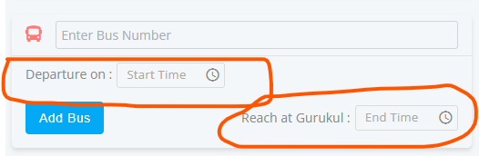

<section class="container">

  <!-------------------------------------------------------------------------------------------------------------------------------
                                                        Custom Mat Datepicker
  -------------------------------------------------------------------------------------------------------------------------------->
  <h2 class="mb-0 font-weight-bold mt-5 ml-4 mb-4 text-primary">
    <i class="material-icons text-danger font-weight-bold">subdirectory_arrow_right</i> Mat Custom Datepicker with Icon
  </h2>
  <div class="container-fluid">
    <div style="display: inline-flex;">
      <div>
        <mat-form-field appearance="outline">
          <mat-label>Choose a date</mat-label>
          <input matInput [matDatepicker]="picker">
          <mat-datepicker-toggle matSuffix [for]="picker"></mat-datepicker-toggle>
          <mat-datepicker #picker></mat-datepicker>
        </mat-form-field>
      </div>

      <div>
        <mat-form-field appearance="outline">
          <mat-label>Choose a date</mat-label>
          <input matInput [matDatepicker]="picker1">
          <mat-datepicker-toggle matSuffix [for]="picker1">
            <i class="fa fa-calendar-o datepicker-icon" matDatepickerToggleIcon></i>
          </mat-datepicker-toggle>
          <mat-datepicker #picker1></mat-datepicker>
        </mat-form-field>
      </div>
      <!-- to month -->
      <div>
        <mat-form-field appearance="outline">
          <mat-label>Choose a date</mat-label>
          <input matInput [matDatepicker]="picker2">
          <mat-datepicker-toggle matSuffix [for]="picker2">
            <i class="material-icons datepicker-icon" matDatepickerToggleIcon>date_range</i>
          </mat-datepicker-toggle>
          <mat-datepicker #picker2></mat-datepicker>
        </mat-form-field>
      </div>
    </div>
  </div>


  <!-------------------------------------------------------------------------------------------------------------------------------
                                        Mat Custom Dropdown with Input Search & Mat checkbox
  -------------------------------------------------------------------------------------------------------------------------------->
  <h2 class="mb-0 font-weight-bold mt-5 ml-4 mb-4 text-primary">
    <i class="material-icons text-danger font-weight-bold">subdirectory_arrow_right</i> Mat Custom Dropdown with Input
    Search & Mat checkbox
  </h2>
  <!--
  <div class="container-fluid">
    <mat-form-field appearance="outline">
      <mat-label>All User (1)</mat-label>
      <mat-select [formControl]="selectcheck" multiple>
        <div class="mat-main-select">
          <input type="text" class="form-control mat-select-input" placeholder="search">
        </div>
        <mat-option *ngFor="let selectcheck of selectedList" [value]="selectcheck">{{selectcheck}}</mat-option>
      </mat-select>
    </mat-form-field>
  </div> -->


  <!-------------------------------------------------------------------------------------------------------------------------------
                                            ng Date Time picker (owl DateTime Picker)
  -------------------------------------------------------------------------------------------------------------------------------->
  <h2 class="mb-0 font-weight-bold mt-5 ml-4 mb-4 text-primary">
    <i class="material-icons text-danger font-weight-bold">subdirectory_arrow_right</i> ng Date Time picker (owl
    DateTime Picker)
  </h2>

  <div class="container-fluid mb-5">
    
    <!-- npm i ng-pick-datetime -->
    <!-- import { OwlDateTimeModule, OwlNativeDateTimeModule } from 'ng-pick-datetime'; -->
    <!--- Return toISOString (2015-01-01T04:45:00.000Z) --->
    <!-- <div class="input-with-icon">
      <input [owlDateTime]="dt2" placeholder="Date Time" class="bus-picktime">
      <span [owlDateTimeTrigger]="dt2"><i class="material-icons icon">watch_later</i></span>
      <owl-date-time #dt2></owl-date-time>
    </div> -->

    <!-- https://daniel-projects.firebaseapp.com/owlng/date-time-picker -->
    <!-- https://stackblitz.com/edit/owl-datetimepicker?file=src%2Fapp%2Fbasic%2Fbasic.component.scss -->
  </div>

</section>


<!--***********************************************************************************************************************************
                                                            rushabh
************************************************************************************************************************************-->
<div class="request-filter-section">
  <div style="display: inline;">

    <div style="float: left;">
      <strong class="from-Date">Date Range</strong>
      <input type="month" class="date-picker">
      <span class="to-Date">To</span>
      <input type="month" class="date-picker">
      <strong class="user-text">Users</strong>
      <mat-form-field appearance="outline" style="position: relative; top: 4px;">
        <mat-label>All User (1)</mat-label>
        <mat-select [formControl]="selectcheck" multiple style="background: #fff;">
          <div class="mat-main-select">
            <input type="text" class="form-control mat-select-input" placeholder="search">
          </div>
          <mat-option *ngFor="let selectcheck of selectedList" [value]="selectcheck">{{selectcheck}}</mat-option>
        </mat-select>
      </mat-form-field>
    </div>
    <div style="float: right;">
      <input type="search" placeholder="search..." class="search-input" autocomplete="off">
      <button class="btn-search"><i class="fa fa-search"></i></button>
    </div>

  </div>
</div>


<!--
<div class="mt-5">
  <div class="request-filter-section">
    <div class="mainfilter-row">
      <div style="width: 25%; display: flex; align-items: center;">
        <b class="date-text">Date Range</b>
        <input type="month" class="date-picker">
      </div>
      <div style="width: 20%; display: flex; align-items: center;">
        <strong class="date-text2">To</strong>
        <input type="month" class="date-picker">
      </div>
      <div style="width: 20%; display: flex; align-items: center; background: pink;">
        <span class="user-text">Users</span>
        <select class="select-input bg-warning">
          <option>bvjv</option>
        </select>
      </div>
      <div style="width: 30%; display: flex; align-items: center; justify-content: flex-end;">
        <input type="search" placeholder="search..." class="search-input" autocomplete="off">
        <button class="btn-search"><i class="fa fa-search"></i></button>
      </div>
    </div>
  </div>
</div> -->
